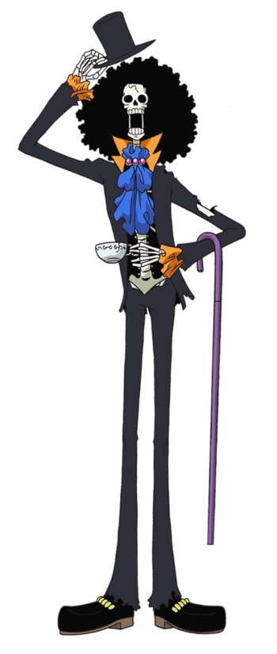

Quem é Brook
Antes de se tornar um pirata, Brook era o líder de um comboio de batalha e foi lá que ele aprendeu a esgrima. Não se sabe por que Brook saiu, mas depois de sair, ele se juntou aos Piratas Rumbar. Quando Brook e sua tripulação estavam viajando, eles notaram que um bebê baleia os estava seguindo por causa da música que Brook estava tocando. A tripulação permitiu que a baleia os seguisse e deu-lhe um nome, Laboon. Laboon marcou Brook e sua equipe em todas as suas aventuras. Quando chegou a hora de entrar na Grand Line, os Piratas Rumbar hesitaram, pois Laboon ainda era um bebê e a Grand Line era um lugar perigoso para ele.
Eles tentaram convencer Laboon a ficar no West Blue, mas falharam. Eles então começaram a ignorar a baleia para que ela desistisse deles e fosse embora, esse plano funcionou porque eles não viram Laboon por alguns dias. Mas quando os Piratas Rumbar entraram na Grand Line, ficaram surpresos que Laboon os tivesse seguido até a Grand Line. Como a nave deles precisava de alguns reparos, eles ficaram com Laboon. Assim que o navio foi consertado, Brook e sua tripulação deixaram Laboon sob os cuidados de Crocus e prometeram a Laboon que voltariam para buscá-lo depois que explorassem a Grand Line.
Enquanto Brook e sua tripulação viajavam pela Grand Line, um desastre atingiu seu navio. O capitão da tripulação e metade dos tripulantes contraíram uma doença incurável. Brook chorou quando o capitão Yorki e metade da tripulação adoeceram com uma doença incurável que exigia que eles fossem separados para impedir que se espalhasse para a outra metade da tripulação. O resto da tripulação decidiu nomear Brook como o novo capitão porque confiava nele; todos eles navegaram para o Triângulo Floriano onde foram atacados por alguns piratas inimigos. O médico deles foi morto no ataque e o veneno se espalhou no navio. Brook sabia que ele viveria porque tinha os poderes da Yomi Yomi no Mi e sugeriu que tocasse uma última música que seria gravada no Tone Dial, para que quando Brook revivesse, ele pudesse pegá-la de volta e tocá-la. para Labão. Mais tarde, lentamente cada membro da tripulação começou a sucumbir ao veneno e morrer.
Quando Brook morreu, sua alma foi capaz de retornar ao seu corpo devido aos poderes de sua Akuma no Mi. Todo o seu corpo era esquelético e apenas seu afro foi mantido, pois ele tinha raízes muito fortes. Brook passou cinquenta anos no navio, o que foi muito doloroso para ele, pois sentia muita falta de sua tripulação.
Como é a aparencia dele?

Brook é um esqueleto extremamente alto vestido em traje formal completo com cartola e bengala, ele é o segundo membro mais alto da tripulação do Chapéu de Palha, tendo sido ultrapassado por Jinbei. Apesar de não ter pele, ele possui um cabelo afro que diz ser porque seu cabelo tem raízes muito fortes. O estilo de Brook consistia em um casaco, cartola, calças e afro, que eram pretos, enquanto o forro interno do casaco era amarelo-laranja. A gravata que estava amarrada entre o casaco e ao redor seu pescoço era azul. devido aos seus muitos anos de reclusão, suas roupas estavam um tanto esfarrapadas.
Depois do time skip ele agora usa roupas coloridas e de alta qualidade, como se fosse uma estrela do rock, agora ele usa óculos escuros em formato de coração, ele também usa agora um boá de penas amarelas (Segundo o dicionário, boá é uma espécie de faixa estreita e comprida, de peles ou de plumas.), agora ele usa uma cartola com a aba em formato de uma coroa e calças com o estilo floral. apesar de ele ainda ser um esqueleto, ele cresceu até 2,77 m.
Personalidade dele
Brook é um personagem excêntrico com uma personalidade distinta assim como todos os outros Piratas do Chapéu de Palha.
Enquanto ele parece ser um cavalheiro, ele possui modos vulgares e pervertidos, como pedir para ver as calcinhas das mulheres (embora no caso de uma sereia ele pergunte se elas podem emprestar-lhe algum dinheiro - no entanto, ele fez essa pergunta para a Princesa Sereia de qualquer maneira), gritando com impaciência por comida (um traço compartilhado com seu capitão) e, ocasionalmente, arrotando e peidando de forma visível (e cômica). Apesar deste comportamento, ele ainda continua muito educado geralmente se referindo as pessoas como "-san" e sempre fala com todos os inimigos de maneira muito cortês. Ele aprecia as coisas mais simples: de um gesto de gentileza, da companhia dos outros e da luz do sol, depois de ter recuperado sua sombra. Brook foi levado às lágrimas ao simplesmente poder compartilhar um jantar com pessoas depois de décadas sozinho no Triângulo Florian.
Apesar de seu comportamento excêntrico, Brook é uma pessoa extremamente justa e compassiva que é digna de um verdadeiro cavalheiro, já que ele despreza completamente a maldade e a crueldade. Quando Zeo começou a atacar implacavelmente seus próprios homens, Brook defendeu até mesmo um dos inimigos do ataque de Zeo, repreendendo o mesmo por sua crueldade. A compaixão de dele é mostrada em Zou, onde ficou horrorizado pela imensa devastação causada pelos Piratas da Besta. Ele ajudou prontamente os minks, gravemente feridos, juntamente com seus companheiros de tripulação. Depois que Luffy chegou em Zou, Brook deu a instrução específica de não mencionar nada sobre Wano e samurais sem consideração pelos minks. Ele mesmo bateu em Luffy depois que este expressou desapontamento ao não conhecer Raizo.
Suas reações a diferentes ocorrências podem ser um pouco extremas, muitas vezes cômicas. Por exemplo, quando seus companheiros ficaram alarmados com ele por ser um esqueleto vivo, ele esquece que o objeto do medo é realmente ele mesmo e também começa a entrar em pânico. Embora ele tende a exibir mais emoções extremas às vezes, Brook é conhecido por relaxar demais quando lhe é dito para manter a calma. Ele também é muito paciente, tendo permanecido no navio da sua antiga tripulação por anos, esperando o dia em que ele, eventualmente, teria de volta sua sombra. No entanto, devido à sua descortesia, ele também pode ser impaciente com coisas como esperar o jantar ser servido. A característica mais notável de Brook, entre outros, é que ele "solta" piadas de esqueleto adicionada da sua risada distinta "Yohohoho", mesmo que não tenha ninguém ao seu redor. Quando Chopper interrompeu uma de suas piadas ao dizer o que pretendia dizer de antemão, Brook ficou temporariamente deprimido.
Todas as recompensas do Brook
- 383,000,000 Berries
- 83,000,000 Berries
- 33,000,000 Berries
Primeira recompensa
Depois de assumir como Capitão dos Piratas Rumbar após a morte de Yorki, Brook obteve uma recompensa de $33.000.000. Apesar de estar "morto" por 49 anos, os Marinheiros reconheceram Brook na imagem do cartaz, e descobriram que ele se juntou aos Chapéu de Palha, revelando, assim, que a sua recompensa ainda está ativa.
Segunda recompensa
Por ser membro do bando e ajudar em dressrosa, sua recompensa aumentou para $83.000.000
Terceira recompensa
É a atual recompensa e conseguiu ajudando em onigashima na batalha e ajudar a libertar Wano e por Luffy ser um imperador conseguiu a recompensa $394.000.000
Habilidades do Brook
Por mais que Brook normalmente faça brincadeiras no navio se envolvendo em atos de tolice com Luffy, ele ainda é um oponente formidável. Devido às suas experiências e habilidades anteriores que ele acumulou desde os dias em que o Rei dos Piratas Gol D. Roger ainda estava ativo, Brook, em todos os aspectos, é um pirata veterano (embora esses atributos sejam um pouco minimizados por seu comportamento geral, juntamente com o fato de que seu isolamento no Triângulo Floriano parecia ter erodido seu conhecimento da sociedade moderna).
Quando Brook luta, suas batalhas geralmente têm um elemento cômico, incluindo fazer alguns dos membros de sua própria tripulação adormecerem enquanto lutam contra os Flying Fish Riders , se fingindo de morto no meio de uma batalha, ou se lançando . em um inimigo com resultados errôneos. Sua personalidade infantil ocasionalmente dificulta sua eficácia. Embora muitas vezes ele se assuste facilmente com inimigos poderosos ou sobrenaturais, ele pode ser muito calmo e destemido para defender sua tripulação, como quando ele se sacrificou voluntariamente na esperança de conter um Pacifista e Bartholomew Kuma , e quando ele percebeu que poderia enganar Giolla para derrotá-la. Quando ele conheceu os Chapéus de Palha, ele rapidamente provou ser um trunfo para eles durante seus encontros com muitos habitantes mortos-vivos de Thriller Bark.
Após o timeskip, as habilidades gerais de Brook provaram ser um trunfo muito importante durante batalhas, pois ele derrotou o Zeo com esteróides de energia sem dificuldade, e derrubou Giolla dos Piratas Donquixote . Ao lutar para recuperar o Thousand Sunny , ele e Tony Tony Chopper lutaram e derrotaram vários soldados de xadrez de Big Mom. Isso lhes rendeu elogios de Charlotte Katakuri , um dos Sweet Commanders da Big Mom.
Brook demonstrou inteligência tática, como mostrado quando ele usou sua música para agir como se estivesse do lado de Giolla , permitindo que ele recuperasse sua espada e a derrotasse. Ele também teve a ideia de armazenar as cópias do Poneglyph da Big Mom dentro de sua cabeça antes que ela o confrontasse e depois o capturasse. Ele é muito bom em trabalhar com outros para executar planos em conjunto, como mostrado quando ele aproveitou a distração de Pedro para contornar seus oponentes mais fortes e entrar na Sala do Tesouro. Ele também se disfarçou como um clone de Luffy para tirar proveito do caos quando Luffy invadiu a festa do chá de Big Mom, e ele destruiu o retrato de Carmel de Big Mom sem ser notado.
Ele mostrou ter uma forte vontade, pois foi capaz de resistir a uma explosão de Haoshoku Haki da Big Mom.